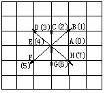
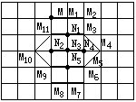

第十五讲 综合题选讲
在数学竞赛试题中渗透数学思想、方法、观念，有时还通过试题介绍或渗透某种新知识，这是数学竞赛的发展趋势.因此必须加强思维能力的训练，培养学生严谨的逻辑推理能力，灵活的技巧方法，并且通过解题培养创造性。
例1 如右图，我们规定在边长为1的正方形方格纸上，从格点O到与它相邻的格点A、B、C、D、E、F、G、H的共有8种直线运动形成线段，这8种运动依次分别记为数码0、1、2、3、4、5、6、7.例如以O为始点，数码2代表形成线段OC的运动，数码7代表形成线段OH的运动等等。

在图（a）中画出了从P点出发，数码序列001223355的轨迹图形。请你在图（b）的边长为1的正方形方格纸上，从点M出发.依次按数码序列006756442312画出相应的轨迹图形.以这轨线图形周界和内部的格点为顶点可画出而积不小于2的正方形一共有多少？
分析 此题关键是看懂题目，即线段分别记为数码0、1、2、3、4、5、6、7的意义.如右图：
数码0代表线段OA.
数码1代表线段OB。
数码2代表线段OC。
数码3代表线段OD。
数码4代表线段OE。
数码5代表线段OF。
数码6代表线段OG。
数码7代表线段OH。
这样，006756442312所对应的轨迹图形为封闭折线，为清楚起见标上字母，即为S=MM1M2M3M4M5M6M7M8M9M10M11M，如右图。
因为在S边界上有12个格点（M，M1～M11），内部有5个格点，为N1、N2、N3、N4、N5.这17个点中可形成面积大于等于2的正方形顶点的四点组共有13个。分类①面积为2的共有5个：
（M1M3N3M11），
（M3M4M5M3），
（M5M7M9N3），
（M9N3M11M10），
（N1N2N5N4）。
②面积为4的共有3个：

（MM2N4N2），
（M3M5M9M11），
（N4M6M8N2）。
③面积为5的共有4个：
（MM3N5M10），
（M2M11N5M4），
（N1M10M8M5），
（N1M9M6M4）。
④面积为8的共有1个：
（M1M10M7M4）。
例2 一个自然数若能表示为两个自然数的平方差，则称这个自然数为“智慧数”.比如16=52-32，16就是一个“智慧数”.在自然数列中从1开始数起，试问第1993个“智慧数”是哪个数？并请说明理由？
分析与解答
∵1不能表示为两个自然数平方差，
∴1不是“智慧数”。
①对于大于1的奇数2k+1，
有2k＋1=（k＋1）2-k2 （k=1，2，3，…），
∴大于1的奇数都是“智慧数”。
②对于大于4且被4整除的偶数4k，
有4k=（k＋1）2-（k-1）2 （k=2，3，…），
即大于4的被4整除的数都是“智慧数”.
而4不能表示为两个自然数的平方差，
∴4不是“智慧数”。
③对于被4除余2的数4k＋2（k＝0，1，…）
设4k+2＝x2-y2＝（x+y）（x-y），x、y∈N。
当x、y奇偶性相同时，（x＋y）（x-y）被4整除，而4k+2不被4整除，矛盾。
当x、y奇偶性相异时，（x＋y）（x-y）为奇数，而4k+2为偶数，又矛盾。
∴不存在x、y∈N，使得x2-y2=4k+2，即4h＋2形的数均不为“智慧数”。
在自然数列中前四个自然数中，只有3＝22-12为“智慧数”。
由①②③知，从5开始的每连续四个数中有三个“智慧数”，故四个数为一个周期。
∵1992＝3×664，
∴从5开始有664个周期，
再加上1，2，3，4便共有665个周期，
而4×665＝2660，
因此，第1993个“智慧数”是2660。
例3 有一列数：1，3，4，7，11，18，…（从第3个数起，每个数恰好是它前面相邻两个数的和）。
①求第1993个数被6除余几？
②把以上数列按下述方法分组（1），（3，4），（7，11，18），…（第n组含有n个数）.问第1991组的各数之和被6除余数是几？
分析 ①如果能求出这个数列第1993个数是多少，当然它被6除余数就很好求了.但是，观察数列的构造规律，很难找出求某一项的一般公式.而数列的前几项是已知的，它们被6除余数很容易写出来，再根据“两个数之和被6除的余数，等于这两个数被6除余数之和被6除的余数”就不难依次写出原数列被6除所得余数组成的数列.我们再观察“余数数列”的构成规律：
1，3，4，1，5，0，5，5，4，3，1，4，5，3，2，5，1，0，1，1，2，3，5，2，1，3，4，1，…
只要出现有相邻两个数与前面某相邻的两个数相同且顺序也相同，以后就会依次出现前面同样的一个“片段”，就是说出现“周期”性变化.经过观察、分析，发现“余数数列”每24个数呈现周期性重复：
1，3，4，1，5，…，2，3，5，2。
这样，只要知道第1993个数是排在一个周期的第几个数，就不难找出所要求的余数了。
1993除以24商83余1，第1993个数是排在第84个周期内的第1个数，它除以6余数是1。
②因为第n组有n个数，前1990组数的个数的总和是：
1981045除以24余13，因此第1990组最后一个数除以6余5，并且第1991组各数被6除余数顺序如下：
3，2，5，1，0，1，1，2，3，5，2，1，3，4，1，5，0，5，5，4，3，1，4，5，3，2，….还是24个数为一个周期.一个周期内各余数之和是：
3+2+5+1＋0+1+1+2＋3+5+2＋1+3+4＋1+5+0十5＋5＋4＋3＋1十4十5—66。
66被6整除，就是说每个周期中的数的和能被6整除。第1991组有1991个数，1991除以24商82余23.这1991个数之和被6除余数应等于前23个数之和被6除的余数，也就是66减去最后一个数5所得差被6除的余数：66—5—61，它除以6余1。
由上述分析、计算，知第1991组各数之和被6除余1。
例4 有1993个硬币，排成一行，开始时，都是国徽的一面，不妨说都标为“0”.第卫次，将1993个币翻面，变成“分值”的一面，不妨说都变成“卫”.第2次将其中1992个币翻面，第3次将1991个币翻面，依次递降一，第1993次，将1个币翻面，问可否使结束状态为1993个面全为“l”？
分析 设一行硬币总共有N个，
如N＝1卫.初始：｛0｝，结束：｛1｝，可以办到。
如N＝2.初始：｛0，0｝，第1次：｛1，互｝，
第2次：｛0，1｝，结束状态不是｛l，l｝。
如N＝3.初始：｛0，0，0｝，第1次：｛l，l，l｝，
第2次：｛0，0，l｝，
第3次：（0，l，l），或（0，0，0｝
结束状态不会是｛l，1，l｝。
如N＝4.初始：｛0，0，0，0｝。
第1次：上一十4，｛1，l，卫，1｝（翻动4个币总值增加4，记为上一十4，读作“加4”），
第2次：凸—一3，｛0，0，0，l｝（翻动3个币，总值减少3，记为凸—一3，读作一减3”），第
第4次：|△＝+1
{1，1，1，1}
结束状态可以是{1，1，1，1}。
下面，对于N=5的情况，用树形图，表达这个推理过程，其中结点（即圈内数字）表示5个硬币的状态。
分枝上的记号，代表翻币的过程。
原来的1个0变成1，记为△=+1，
原来的1个1变成0，记为△=-1。
翻币情况（从上到下的一串分枝上的△的和等于5时，初始的5个0最终即变为5个1）：
结论：对于N=5有2种方式达到所要求的目标.对于任意大的N值，可以用递推的思想方法，得到一般性结论：
如N=k时，依次递减个数的翻币，能使“k个0”变成“k个1”，那么，N=k+4也可依次递减个数翻币，使“k+4个0”变成“k+4个1”，反之亦然.设计树形图：
下面再依次翻k个币，k-1个币，….在这些翻动过程中始终保持前4个1不变.这样，以下即化为N≡k时的情况。
结论：N≡0，1（mod4）翻币可成功，
N≡2，3（mod4）必不可能成功.（证明见注）
而1993≡1（mod4）。
∴本题可成功。
注：严格证明：
对于每个币，必翻动奇数次，才能使“0”变成“1”。
N个币每个翻奇数次，总共翻动N个奇数相加.
另一方面，翻动次数总和=1+2+3+…+N
对于N≡2（mod4），记作N＝4k+2。
4k+2个奇数之和=偶数，
=（4k+3）（2k+1）
=奇数，
偶数≠奇数。
对于N=3（mod4），记作N=4k+3。
4k+3个奇数之和=奇数，
=（2k+2）（4k+3）
=偶数，奇数≠偶数。
∴对于N≡2，3（mod4），
翻币后的结束状态不可能为N个1。
本题的解决，给我们一个启示：一上手就解决1993个币的翻面问题，必然头绪纷多，不知所措.此时要“退”够，退到最简单情况，对N=1、2、3、4、5找规律，数目少，结论易得，然后再“进”，而且要总结一般规律.这样，对于1993，以至于对于任何一个数，都一起解决了.